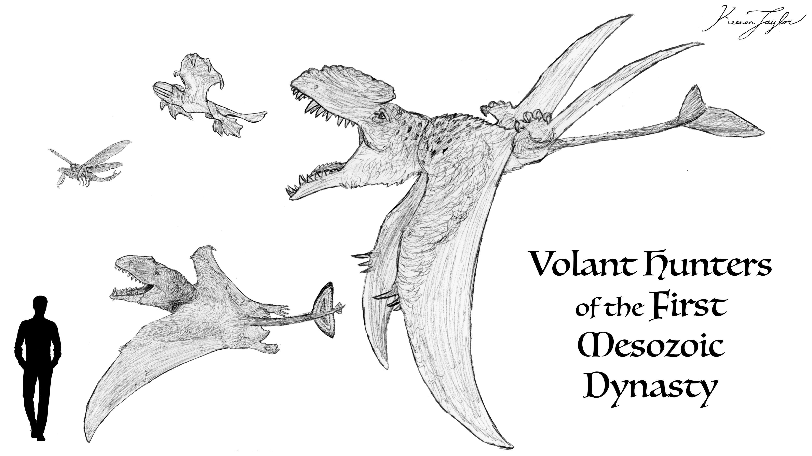
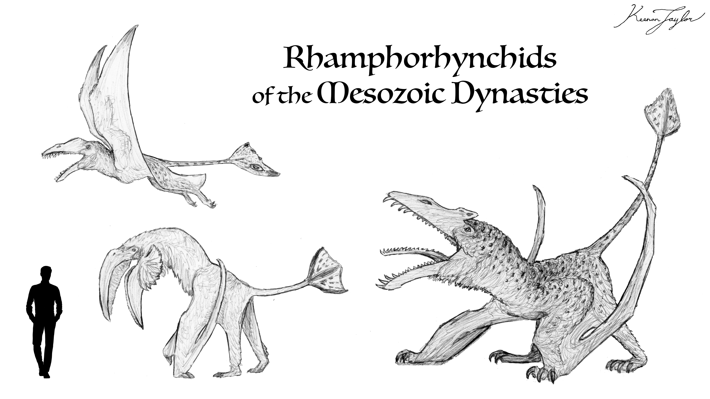
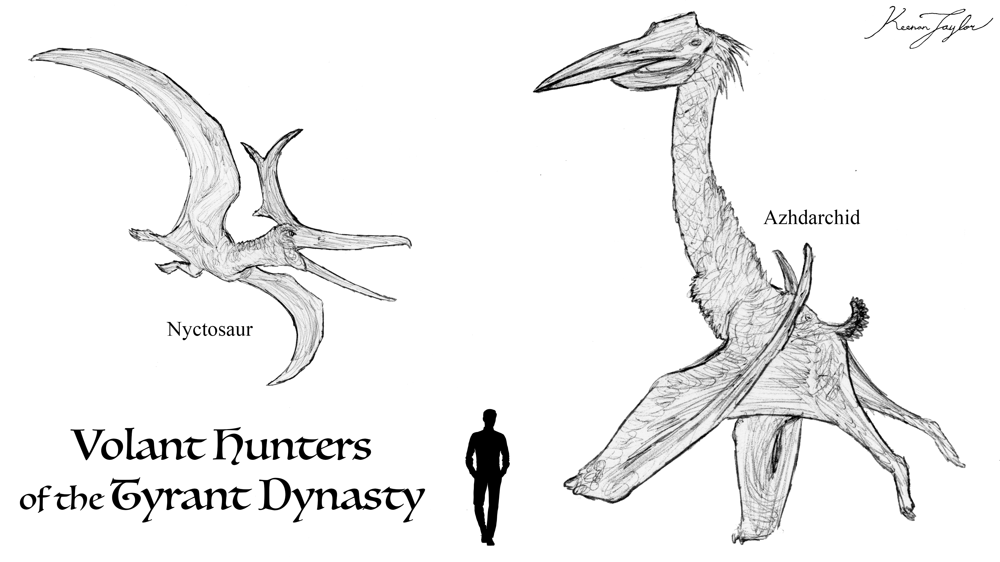
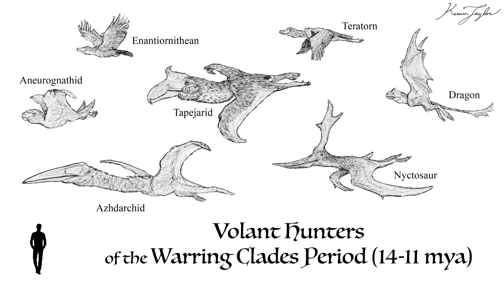
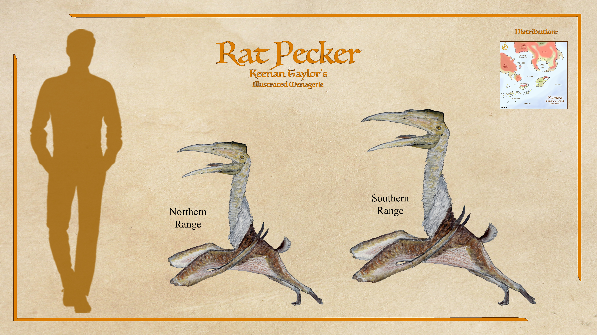
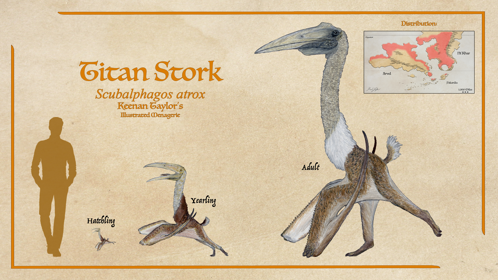
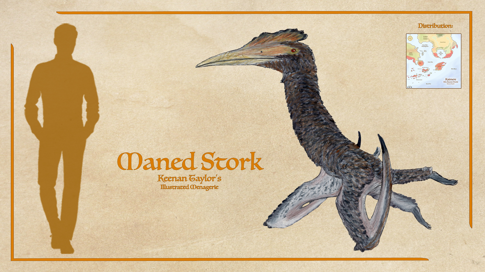
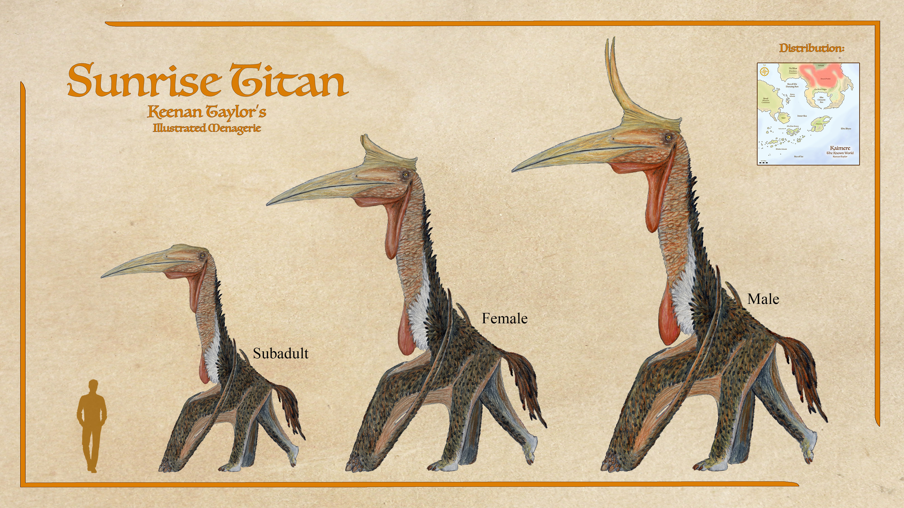

Scientific Classification
| Kingdom | Animalia | Animal | Animala |
|---|---|---|---|
| Phylum | Chordata | Chorda | Corded |
| Clade | Archosauria | Animalia | Animalia |
| Clade | Avemetatarsalia | Animalia | Animalia |
| Order | Pterosauria | Animalia | Animalia |
| Clade | Caelidracones | Animalia | Animalia |
| Suborder | Pterodactyloidea | Animalia | Animalia |
| Infraorder | Eupterodactyloidea | Animalia | Animalia |
| Clade | Azhdarchoidea | Animalia | Animalia |
| Clade | Azhdarchiformes | Animalia | Animalia |
Taxonomic note: Azhdarchidae is a lineage within Pterosauria distinguished historically by its characteristic long-necked, long-legged body plan and its tendency toward terrestrial locomotion. On Earth, azhdarchids included some of the largest known flying animals, with forms such as Quetzalcoatlus and Hatzegopteryx reaching extraordinary dimensions. Their terrestrial anatomy allowed them to walk efficiently despite their enormous wings, and many were probably capable of traveling extensively on the ground while using flight primarily for dispersal and escape.
01 · INTRODUCTION
Overview
Azhdarchids are a lineage of large pterosaurs distinguished by their characteristically long necks, elongated skulls, and highly specialized terrestrial locomotion. On Earth, azhdarchids were among the largest flying animals ever to evolve, with species occupying a variety of terrestrial and coastal environments during the Late Cretaceous. Their anatomy allowed them to function as highly capable quadrupedal walkers as well as proficient fliers, and several members appear to have been adapted primarily for searching large areas of open ground for small vertebrate prey and carrion.
On a Kaimere, however, the history of azhdarchids was considerably more extensive. Introduced during the Age of Red Spring approximately 85 — 70 million years ago, they arrived during a period of ecological upheaval in which the dominant Kaimeran pterosaur fauna was already being weakened by the extinction of the giant rhamphorhynchids. The newly arrived azhdarchids rapidly occupied the vacant niche of large terrestrial pterosaurs and became one of the dominant flying vertebrate groups of the Tyrant Dynasty.
Their Kaimeran history ultimately produced animals considerably more diverse than their Earthly relatives. Some became enormous terrestrial predators, while others remained relatively small generalists. Several evolved adaptations for rapid terrestrial locomotion, and their descendants eventually occupied open grasslands, wetlands, forests, and human settlements.
The largest Kaimeran azhdarchids were among the most imposing flying animals ever to inhabit the planet. The sunrise titan, for example, reached approximately twenty feet in height before the addition of the horns present in large males and possessed a wingspan approaching forty feet. Despite their extraordinary dimensions, these animals remained surprisingly light for their size because of the pneumatic construction characteristic of pterosaurs.
The modern Known World contains only a fraction of the diversity once possessed by the group. Most of the great azhdarchid lineages disappeared during the Dynastic Extinction approximately 15 million years ago. One particularly successful lineage, however, survived as the Ungulaconidae. Its descendants underwent a secondary radiation that produced the modern rat-peckers, titan storks, maned storks, and other terrestrial azhdarchids.
Modern azhdarchids are therefore best understood not as relics of the Late Cretaceous, but as the surviving representatives of a lineage that has repeatedly adapted to changing Kaimeran ecosystems. Their history extends from the great pterosaur-dominated skies of the Tyrant Dynasty to modern grasslands, wetlands, forests, and cities.
02 · DEEP TIME
Evolutionary History
The Origins of Flight in Kaimere

The evolution of Kaimerean pterosaurs began long before azhdarchids arrived on the planet. The earliest flying organisms were indigenous forms of magic, followed by insects introduced during the Carboniferous harvests. During the First Dynasty, enormous griffonflies became among the principal aerial predators. These were eventually challenged by flying heterotherms, a native Kaimerean clade of basal tetrapodamorphs that hunted using echolocation and possessed potent venom. The extinction that ended the First Dynasty severely reduced both groups. Although they recovered during the Permian Dynasty, flying heterotherms became the dominant aerial predators, while griffonflies were progressively restricted to smaller forms. Their decline created an increasingly important ecological opportunity for later volant vertebrates. The skies of Kaimere were also supported by an unusual resource: aeroplankton. During humid periods, enormous quantities of microscopic organisms occupied the atmosphere, providing a rich source of calories for aerial ecosystems. Filter-feeding organisms evolved repeatedly to exploit this resource, creating an extensive aerial food web. This aerial productivity would ultimately be crucial to the success of Kaimeran pterosaurs.
The Rise of Pterosaurs

Pterosaurs first arrived during the first Jurassic dynasty, approximately 190 — 152 million years ago, when dimorphodont pterosaurs were introduced to Kaimere. The dimorphodonts rapidly became dominant aerial predators. Their large heads, powerful jaws, and relatively inefficient flight made them fundamentally different from many later pterosaurs. They were capable of delivering devastating bites to prey while flying and included some extraordinarily large species. The most extreme of these was Limoventus, the Hungry Wind. This enormous pterosaur possessed a secondary pair of wings associated with the hindlimbs, producing a four-winged appearance. The precise function of these lower wings remains uncertain. They may have assisted in steering or takeoff, contributed additional thrust, or even served primarily as display structures. Despite its enormous wingspan of approximately thirty feet, Limoventus was exceptionally lightly constructed and probably weighed no more than approximately 150 kilograms. It appears to have specialized in hunting large aerial filter feeders and other flying organisms. Its size would have made takeoff difficult within dense forests, but its powerful claws suggest that it was capable of climbing trees and potentially launching from elevated positions. The dimorphodonts dominated the first Jurassic dynasty, but their supremacy eventually ended when more efficient pterosaurs were introduced during later harvests.
The Rhamphorhynchid Radiation

Rhamphorhynchids arrived during harvests corresponding approximately to 145 — 115 million years ago. They were smaller, faster, and considerably more agile than the giant dimorphodonts, rapidly replacing them as the dominant aerial predators during the second Jurassic dynasty. Their subsequent radiation was extraordinary. Rhamphorhynchids evolved into fishers, scavengers, terrestrial hunters, small-game specialists, divers, filter feeders, and even marine forms. Some terrestrial representatives eventually exceeded the dimensions of even the largest azhdarchids known from Earth. One of the most important ecological developments was the evolution of aerial filter feeding. As aeroplankton recovered following the climatic deterioration of the preceding ice ages, some rhamphorhynchids began feeding directly upon it. Others consumed insects and other small animals that themselves fed upon aeroplankton. This created an increasingly productive aerial food web and eventually allowed large filter-feeding pterosaurs such as Balaenodactylus to become common components of the atmosphere. Other rhamphorhynchids became specialized predators. Pterochamsus, which evolved toward the end of the dynasty, was an ambush predator capable of killing flying prey with a single powerful attack. Anurognathids also became established during this period as specialized insectivores, while the first small birds appeared in Kaimere. The early birds were initially more successful in temperate environments and did not yet dominate the tropical skies.
The Second Jurassic Dynasty
The Second Jurassic Dynasty began approximately 145 million years ago after a prolonged period of ice ages. It ushered in the first great Age of Dinosaurs on Kaimere. Rhamphorhynchids remained the dominant pterosaurs, while newly introduced tapejarids initially occupied more specialized niches. Tapejarids primarily consumed seeds and fruits, allowing them to coexist with the dominant rhamphorhynchid predators. Rhamphorhynchids themselves continued to increase in size and ecological sophistication. Pterolycus represented a particularly successful lineage of large, intelligent, presumably social aerial predators. Some developed modifications to the leg membranes that improved terrestrial locomotion as their bodies became larger. The largest known representative was Caesarsdracon. Although its height was less than that of the largest later azhdarchids, its overall dimensions were extraordinary, and it rivaled the titan crow of modern Kaimere as one of the largest pterosaurs ever known. Caesarsdracon inhabited an isolated region of western Ni'Khar and occupied a role comparable to the giant predators of the isolated European ecosystems of Late Cretaceous Earth. It hunted small dinosaurs across a fragmented landscape of islands and could fly between islands when necessary. Its enormous size, however, made it comparatively clumsy on the ground and vulnerable to larger terrestrial predators when it ventured onto the mainland. The rhamphorhynchids eventually became victims of their own ecological success. Their largest forms dominated the available large-pterosaur niches while their young and smaller relatives increasingly competed with newly introduced birds. When Kaimere's ecological conditions changed approximately 85 million years ago, the giant rhamphorhynchids collapsed. Unlike some earlier pterosaur extinctions, there were few small generalist rhamphorhynchids capable of immediately replacing them. The ecological position of the great pterosaurs therefore became vacant. The azhdarchids arrived at precisely this moment.
The Arrival of the Azhdarchids
The Age of Red Spring, approximately 85 — 70 million years ago, introduced several new pterosaur groups to Kaimere, including azhdarchids and nyctosaurids. The timing of their arrival was critical. The extinction of the giant rhamphorhynchids had removed the dominant terrestrial and large-bodied aerial predators from the pterosaur community. Azhdarchids rapidly exploited this opportunity and became the principal large terrestrial pterosaurs of Kaimere. Their anatomy was particularly well suited to the new ecological conditions. Their long limbs and elongated necks allowed them to move efficiently across the ground while searching for prey. Although capable of flight, many species increasingly used flight primarily as a means of traveling between feeding areas rather than as their principal method of hunting. This terrestrial specialization became one of the defining characteristics of Kaimeran azhdarchids.
The Tyrant Dynasty

The Tyrant Dynasty began approximately 68 million years ago and lasted until the Dynastic Extinction approximately 15 million years ago. It represented the greatest period of azhdarchid success in Kaimeran history. The climate initially became substantially more arid, changing the structure of terrestrial ecosystems. Forests, wetlands, and open habitats were reorganized, and many large herbivorous dinosaurs declined. Azhdarchids were unusually well positioned to exploit the changing landscape. Their ability to fly allowed them to travel between isolated feeding grounds, while their long legs enabled them to cover enormous distances on foot. Some species became capable of galloping at more than thirty miles per hour. The largest azhdarchids were essentially terrestrial giants that retained flight as an important secondary capability. This was particularly evident in their feeding behavior. Rather than capturing prey in the air, many species searched for prey while walking or running. Their enormous heads and long necks allowed them to seize small animals, carrion, and other food items from the ground. Flight remained useful for escaping predators, reaching isolated feeding grounds, finding mates, and moving between nesting sites. Azhdarchids also diversified into a variety of ecological roles. Some remained small generalists, while others became specialized predators. Several developed remarkable terrestrial adaptations that allowed them to coexist with the enormous dinosaurs and megaraptorans of the Tyrant Dynasty. Meanwhile, anurognathids flourished as nocturnal insect specialists, while enantiornithian birds occupied many of the corresponding daytime niches.
The Dynastic Extinction and Warring Clades

The Tyrant Dynasty ended approximately 15 million years ago during the Dynastic Extinction. The extinction devastated the Kaimeran ecosystem and eliminated most of the great azhdarchid radiation. Unlike the complete disappearance of the rhamphorhynchids during their earlier extinction, however, azhdarchids possessed smaller generalist descendants capable of surviving the ecological collapse. These survivors became the foundation for the later radiation of modern azhdarchids. The Warring Clades Period that followed saw an extraordinary proliferation of large flying animals. Anurognathids, nyctosaurs, tapejarids, and azhdarchids all produced large forms. Flying therocephalians from the Permian Islands also became enormous, while giant enantiornithians and other birds entered the competition. For several million years, the skies represented one of the most competitive aerial ecosystems in Kaimeran history. Azhdarchids ultimately lost much of their former dominance. Tapejarids proved particularly successful and became the most widespread and abundant flying clade in the modern Known World. Nyctosaurs declined, anurognathids became increasingly specialized in response to competition from bats, and the surviving giant azhdarchid lineages were largely eliminated. One branch, however, proved exceptionally resilient.
Ungulaconid Radiation
The surviving ungulaconids descended from relatively small azhdarchids resembling the modern rat-pecker, Scubalphagos vulgarensis. These animals were generalist predators distributed throughout the Known World, particularly in dry tropical environments. Their descendants underwent a major secondary radiation as they adapted to the changing post-extinction landscape. Ungulaconids became increasingly terrestrial and developed specialized adaptations for rapid running. Most notably, they lost the functional use of the middle three fingers and replaced them with a hoof-like cluster of scales. This structure protects the forelimbs from abrasion and injury while the animals gallop across rough terrain. Their reproductive strategy is also highly prolific. Females typically produce clutches of approximately a dozen eggs, although smaller species can lay more and well-fed females may produce multiple clutches. Young hatch highly developed and are capable of hunting and flying soon after emergence. Parental investment is limited. Once the young hatch, the mother generally provides little direct care. Instead, juveniles remain together in groups, producing the social flocks characteristic of many modern ungulaconids. This combination of rapid development, high reproductive output, and social behavior allowed the lineage to recover rapidly after the Dynastic Extinction.
03 · SPECIES ACCOUNTS
Known Diversity
The following accounts document representative felids recorded in the encyclopedia. Select a species to consult its individual natural history and descriptive account.
Rat-Pecker

Scientific placement to be confirmed
Rat-peckers preference is rodents, but they will take just about any small game they can fit in their mouths, even taking on more than they can swallow in their voracity. Although filthy in appearance, many cities begrudgingly appreciate having them around, as they happily eat refuse and clean up any pests they find, both rodent and insect. They don't have a foul smell, likely due to having a poor sense of smell, but they emit a shrill cry whenever they find potential food, or at least enough to support others. They are social animals, living in decentralized flocks, and are surprisingly altruistic in making sure others are fed. They are constantly on the move looking for prey, and most cities have become accustomed to them and begrudgingly accept their presence as a frustrating assistant in keeping the streets clean. Some even welcome them into houses, especially if rodents are spotted.
Read species article →Titan Stork

Scubalphagos atrox
Less accepted is their massive cousin the titan stork, or corpse pecker. The titan stork is perhaps the most famous of Kaimere's pterosaurs. These versatile predators can eat just about any meat, and are quite content to rummage through refuse, earning their generic name. That said, they tend to prefer a mix of small game and fish. They can run at thirty miles per hour and fly almost triple this speed once they build up momentum. This flight is more for efficiently getting between feeding sites, though they aren't above pecking at an opponent while flying by. They are frustratingly intelligent, too. Highly prolific breeders, culling efforts have fallen on deaf ecological ears, as others will simply fly in and quickly repopulate. Mothers will often spread out the clutches in several areas, with some in trees, others buried, but most in open nests she will guard. They reach maturity by their third year, and with clutch sizes of up to twenty, it doesn't take long for a large breeding population to reclaim an area. While not large enough to feed on adult people, that doesn't mean they haven't killed or maimed them, and small children are very much on the menu.
Read species article →Maned Stork

Scientific placement to be confirmed
Although generally a tropical family, the maned stork azdarchid of Pakardia and the Khalin Islands provides similar services as their fellow Ungulaconids to the habitats of the temperate regions. The maned stork animals tend to live in much smaller groups and usually hunt alone. They are far less comfortable around people, but will still linger near settlements to snatch a free meal.
Read species article →Sunrise Titan

Scientific placement to be confirmed
Tallest and most imposing of all flying animals in the Known World, the sunrise titan is truly massive azhdarchid rivaling the size of the greatest sky titans of the Tyrant Dynasty. Looming at around twenty feet, taller with the horns on males, they are a frightening presence on the houze prairie. Although their smaller cousins evolved in the Known World, the sunrise titan flew to Kairul and got massive, coming back west with the spread of houze grass. This habitat is perfect for this outsized giant. With a galloping speed of over thirty five miles per hour, they can run down all manner of small game. Given their size, small game includes prey less than three hundred pounds, and Kaimerans are on the menu. Their eyes are set wide on their head, meaning they can scan for and keep a lock on prey while running at speed or even while flying. Their vision is quite keen. While limits are not known, they are recorded to spot grounded prey from three miles away, and circling vultures over a carcass at least forty miles off. As they lack a refined sense of smell, vision while flying is how they generally spot potential meals.
Read species article →04 · CLASSIFICATION
Taxonomic Notes
Azhdarchids belong to Pterosauria, the extinct clade of volant reptiles that dominated the skies during much of the Mesozoic. Their wings were formed by a membrane supported primarily by an enormously elongated fourth finger and extending along the side of the body toward the hindlimbs. Unlike birds, which rely principally upon their hindlimbs to launch into flight, pterosaurs appear to have used all four limbs during takeoff. Their powerful forelimbs could therefore contribute directly to the launch stroke, allowing even enormous individuals to become airborne despite their comparatively lightweight construction.
The Kaimeran azhdarchids are descended from the lineage introduced during the Age of Red Spring, approximately 85 — 70 million years ago. Their modern descendants are considerably more diverse in ecology than their Earthly relatives. Some remain large terrestrial predators, while others are smaller generalists that forage around settlements, wetlands, grasslands, and other human-modified environments.
The most important modern Kaimerean radiation is the family Ungulaconidae, a specialized group of terrestrial azhdarchids. Ungulaconids have modified the middle three fingers of the forelimb into a hoof-like cluster of scales. This structure protects the forelimbs from repeated contact with the ground while the animals gallop. The modification is particularly important because modern ungulaconids frequently use running as their primary method of terrestrial locomotion.
Modern azhdarchids therefore differ substantially from the stereotypical image of pterosaurs as animals that spend nearly all of their time in flight. Although capable flyers, many Kaimerean species are primarily terrestrial predators and scavengers that use flight to travel efficiently between feeding grounds, evade predators, locate carrion, or migrate between seasonal habitats.